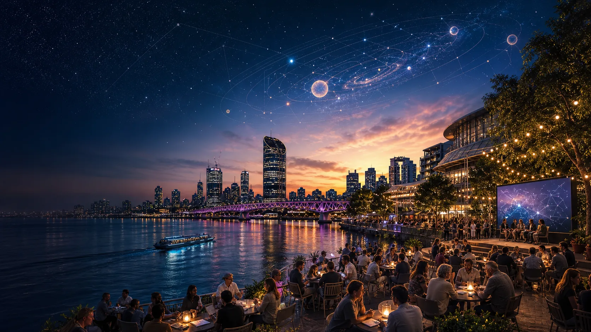
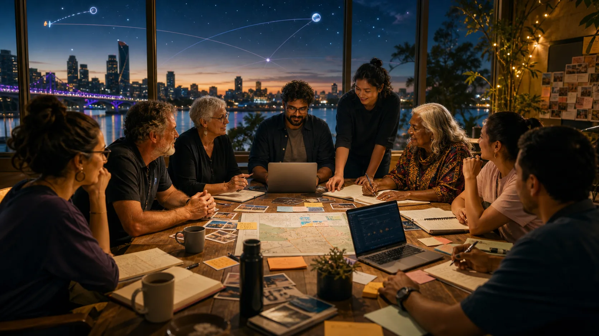

Make the idea inspectable
Supporters can see the core story, seed-doc lineage, public boundaries and the kinds of help that would move it from vision into convening work.

Early support invitation, not an announced event
A proposed Brisbane gathering for people who want care, civic technology, local resilience and peaceful space cooperation to meet in the same room early enough to matter.

Why this page exists
This site is the first public support layer: a calm way to show the idea, invite useful allies, and separate genuine civic preparation from hype. It keeps the summit as a working proposal until partners, venue logic, cultural protocol and practical backing are ready.
The seed docs give the site a real spine: C-Hours and the mobilisation of care, Minjerribah sand-to-stars thinking, P4A civic architecture, peaceful space cooperation, eclipse readiness and public-safe source trails.
Doorways
Ground the sand-to-stars story, C-Hours and the Peaceful Space Gambit without pretending the summit is already locked in.
02Care economy, Sovereignty Stack, AUKUS Space Gambit, ISS preservation, Web3 Sensorium, eclipse readiness and public trust.
03Yarning-circle rooms, evidence studios and support commitments, framed as invitations rather than promises.
04The next Australian eclipse markers and the choice between awe, fear and readiness.
05A practical form that creates a Markdown support note for partners, organisers and agent teams.
06Visible links to Strange but True, P4A and the public-safe project boundary.
Early leverage
Supporters can see the core story, seed-doc lineage, public boundaries and the kinds of help that would move it from vision into convening work.
The site speaks to community hosts, civic technologists, researchers, carers, venue allies, funders, sky-literacy people and media builders without over-selling to everyone.
Public pages carry the invitation. Private notes, cultural permissions, health claims, partner details and sensitive records stay off the public surface.